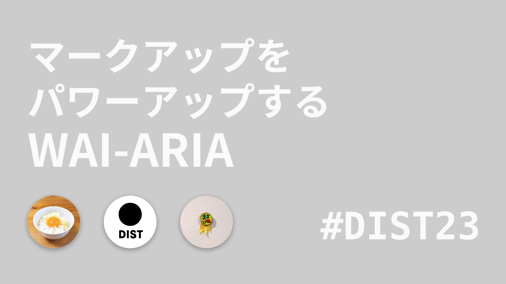

私たち
 @masuP9(わかり手)
株式会社サイバーエージェント
@masuP9(わかり手)
株式会社サイバーエージェント
 @o_ti(キレ手)
株式会社まぼろし
@o_ti(キレ手)
株式会社まぼろし
- マークアップ生まれ
- マークアップ育ち
- フロントエンドエンジニア
- 受託魔族はだいたい友達
#deisui_html_radio
ウェブ制作をこじらせたオレたちが
歩いてきた道は何か、進むべき道はどこかを探る
（ただの飲み配信）
目次(role="directory")
WAI-ARIAってなに
<header role="banner">
hogehoge
</header>- WAI
- Web Accessibility Initiative
- ARIA
- Accessible Rich Internet Applications
WAI-ARIAは、ウェブコンテンツおよびアプリケーションの
アクセシビリティと相互運用性を改良するための
フレームワークを提供する技術仕様である。
WAI-ARIAはアクセシビリティを高めるため
マークアップ言語のセマンティクスを
補強するためのもの
背景 : アプリケーション化するWeb
開発者はHTML要素とCSSとJavaScriptで 折りたたみツリーウィジェットの ようなものを作る
それが折りたたみツリーウィジェットだと知覚できるのはなぜ？
ツリーを開くことができると知覚できるのはなぜ？
視覚的なぽさから役割や状態を知覚している
押せそう
視覚的なぽさを得られない場合にどう知覚するか
<div>button</div>押せなさそう
セマンティクス
どうするのか
<tab></tab> ?
要素を増やすのは大変やったやん...
思い出してごらん...
sectionarticlehgroup
属性でパワーアップ💪
WAI-ARIAは属性でセマンティクスを補強する
WAI-ARIAはHTMLに限らない
ホスト（マークアップ）言語を拡張する。
SVGやXMLも対象
さらにホスト言語を進化させる役割
マークアップの進化を止めるな！
WAI-ARIAでなにができるの
HTML（ホスト言語）に足りない
セマンティクスを補強できる
WAI-ARIAは何を付与できるか
- 役割 :
role - 状態 :
aria-* - プロパティ :
aria-*
<ul role="tree" aria-label="menu tree">
<li role="treeitem" aria-selected="true">...</li>
<li role="treeitem" aria-selected="false">...</li>
</ul>役割 : role
<ul role="tree"></ul>これはツリーウィジェットである
状態 : ステート
<li role="treeitem" aria-selected="true">...</li>このツリーアイテムは選択されている（いない）
プロパティ
<ul role="tree" aria-label="menu tree"></ul>このツリーウィジェットの名前プロパティはmenu treeである
これらの付与されたセマンティクスはどのようにユーザー（支援技術）に伝わるか
アクセシビリティAPI
OSが支援技術にセマンティクスなどの
情報を伝えるAPI
ブラウザがレンダリングしているコンテンツを
アクセシビリティAPIのオブジェクトに変換して
支援技術に伝える
一旦まとめ
- WAI-ARIAはアクセシビリティ向上のためにマークアップ言語のセマンティクスを補強するための仕様
- WAI-ARIAが補強できるのは、役割、状態、プロパティ
- WAI-ARIAが補強したセマンティクスはアクセシビリティAPIを通じて支援技術に伝わる
WAI-ARIAをどういうときに使うの
aria-label
可視ラベルが使用できない場所で
不可視ラベルを提供できる
「可視ラベルが使用できない」とは？
- ハンバーガーメニューのアイコン
- ヘッダー、フッターのメニュー
- 同じ文言のリンク
ビジュアルを推した結果
ラベルがない／不足しているコンテンツ
「不可視ラベルを提供できる」とは？
スクリーンリーダーが読み上げることができる。
ビジュアルではラベルなしのままで
機械が読める代替テキストを設定できる
ハンバーガーメニューのアイコン
<button type="button" aria-label="サイトメニューを表示する">
<span></span>
<span></span>
<span></span>
</button>ヘッダー、フッターのメニュー
<header>
<h1><img src="..." alt=""></h1>
<nav aria-label="グローバルナビ">
<ul>
<li><a href="~">トップ</a></li>
<li><a href="~">メンバー紹介</a></li>
<li><a href="~">配信アーカイブ</a></li>
<li><a href="~">泥酔情報</a></li>
</ul>
</nav>
</header>同じ文言のリンク
<a href="~" aria-label="泥酔事例について詳しく見る">more...</a>
<a href="~" aria-label="配信機材について詳しく見る">more...</a>
<a href="~" aria-label="放送予定について詳しく見る">more...</a>aria-labelledby
離れた要素のテキストをラベルとして使う
ラジオボタングループ
<p id="optionLabel">泥酔するなら？</p>
<div role="radiogroup" aria-labelledby="optionLabel">
<input type="radio" name="alcohol" value="~">ハイボール
<input type="radio" name="alcohol" value="~">ストロングゼロ
<input type="radio" name="alcohol" value="~">99.99
<input type="radio" name="alcohol" value="~">テキーラ
</div>「泥酔するなら？」というラベルの
ラジオボタングループになる
タブ
同じ表示領域で内容が切り替わるウィジェット
role="tablist"role="tab"role="tabpanel"aria-selectedaria-hidden
WAI-ARIAなし
<nav>
<ul>
<li>
<a href="#tabItem1">越智</a>
</li>
<li>
<a href="#tabItem2">桝田</a>
</li>
</ul>
</nav>
<div>
<div id="tabItem1">キレ手</div>
<div id="tabItem2">わかり手</div>
</div>WAI-ARIAあり
<nav>
<ul role="tablist">
<li role="presentation">
<a href="#tabItem1"role="tab" aria-controls="tabItem1" aria-selected="true" id="tabBtn1">越智</a>
</li>
<li role="presentation">
<a href="#tabItem2"role="tab" aria-controls="tabItem2" aria-selected="false" id="tabBtn2">桝田</a>
</li>
</ul>
</nav>
<div>
<div id="tabItem1" role="tabpanel" aria-labelledby="tabBtn1" aria-hidden="false">キレ手</div>
<div id="tabItem2" role="tabpanel" aria-labelledby="tabBtn2" aria-hidden="true">わかり手</div>
</div>ライブリージョン
更新される領域であることを支援技術に伝える
- チャット
- 株価表示ウィジェット
- スポーツのテキスト実況
- フォームの入力エラー
etc...
コメント欄
<div role="log" aria-live="polite">
<ol>
<li>魔界合宿</li>
<li>「人はすぐ死ぬ」</li>
<li>伊東家のこじらせ</li>
<li>マスみがある</li>
</ol>
</div><div role="log" aria-live="polite">
<ol>
<li>魔界合宿</li>
<li>「人はすぐ死ぬ」</li>
<li>伊東家のこじらせ</li>
<li>マスみがある</li>
<li>例え話下手くそ選手権優勝</li> <!-- New -->
</ol>
</div>ライブリージョンロールは暗黙のaria-liveを持つが、暗黙の~に対応していないUAのために併記することが多い。
他の例などは
ARIA in HTML
- 特にHTMLにおいてWAI-ARIAをどう使うか
- role毎に使用できるaria-が決まっている
WAI-ARIAの前に
そもそも問う
WAI-ARIAを書く必要があるのか？
- 見出しがちゃんと付けばいいんちゃう？
- そこ本当にアコーディオンな必要ある？
- そこ本当にタブな必要ある？
- なんで英語？
見出しやラベルは見えるように書いていきたい。
タブやアコーディオンはそのまま並べたい。
だってJS実装いらなくなるし！！！
しかしそうもいかないこんな世の中
- Single Page Application
- コンテンツ／ライティングの世界観
- 何としても100vhに納めたいデザイン
- 何としてもその場でエラーを伝えたいフォーム
HTMLだけでは解決できない現実よ
まずは素直にマークアップで情報設計
- セクショニング
- 見出し要素
- 表、リスト、引用、図版
- a要素、button要素
- alt
WAI-ARIAとJavaScriptでアクセシブルに
- a要素内のテキストだけで伝わるか？
- アコーディオン
- タブ
- ライブリージョン
まとめ
マークアップは世の中でもっとも難しい。
ゆえに、
もっともソリューションでなければならない。
HTML + WAI-ARIA + JavaScriptで
「非アクセシブル」を解決しよう！
WAI-ARIAでマシンリーダビリティーを上げれば
ヒューマンリーダビリティーがついて来る。
マークアップをパワーアップさせて
全ての人に等しく情報を届けよう！